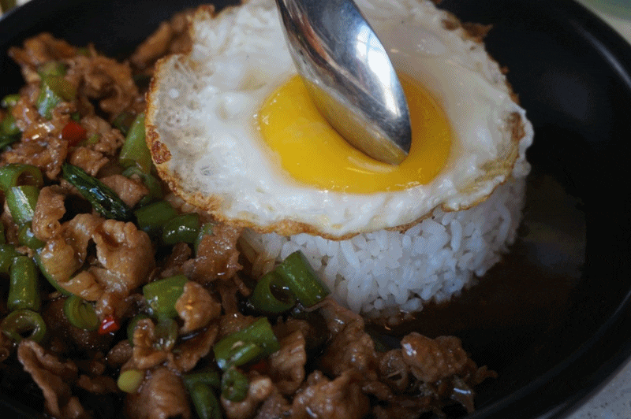

Moo Pad Krapow!

Description:
Moo Pad Krapow is a Thai stir-fry dish made with ground pork, garlic, chilies, and Thai basil, seasoned with savory sauces and typically served over rice with a fried egg on top.
This dish is a staple of Thai street food, beloved for its bold, spicy flavor and quick preparation. It has roots in central Thailand and showcases the influence of Chinese stir-frying techniques blended with Thai herbs and spices.
Ingredients:
- Ground Pork
- Egg
- Garlic
- Soy Sauce
- Fish Sauce
- Oyster Sauce
- Sugar
- Fresh Chilies
- Thai Holy Basil
Steps:
- Heat oil in a pan or wok over medium-high heat.
- Add minced garlic and chilies; stir-fry until fragrant.
- Add ground pork and cook until it's no longer pink.
- Pour in sauces (soy sauce, fish sauce, oyster sauce, and a little sugar); stir well.
- Add Thai basil and cook until just wilted.
- Serve hot over rice, ideally with a crispy fried egg on top.
Home